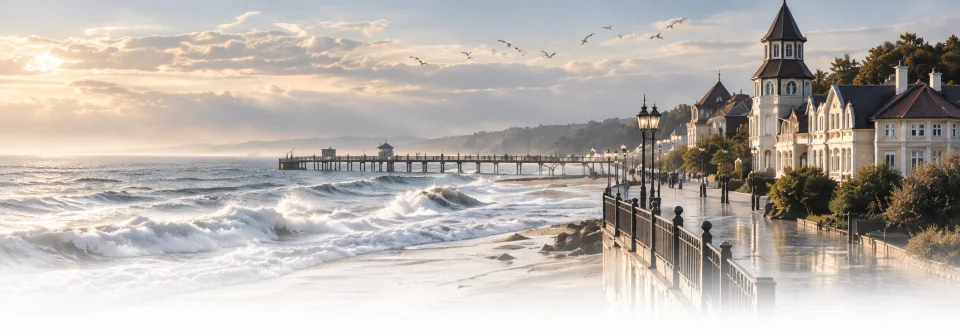
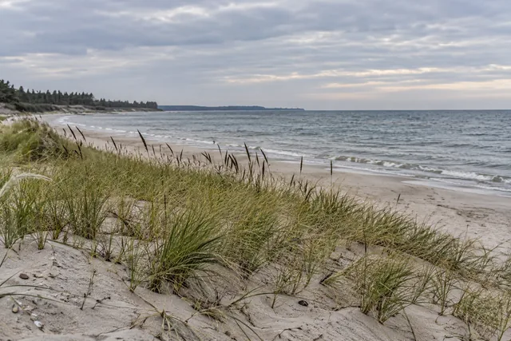

Зеленоградск · у променада
Море перед первым кофе
После прогулки можно вернуться к променаду. Сравните дорогу к своим остановкам, прежде чем выбирать улицу.
Добавьте остановки — сравним дорогу
Свет на сайте
Сегодня · Калининград
В режиме «Авто» свет меняется вместе с солнцем.
Начало астрономической ночи для этих суток не рассчитано.
Спланировать вечерБраузер не сохранил выбор. На этой странице режим работает.
Балтийский
характер
рядом
Место, из которого начинается день
У моря, среди вилл или рядом с городскими прогулками. Выбирайте базу по своей поездке — и смотрите, сколько времени займёт дорога.
От двери до первой остановки
Хорошая база оставляет больше времени на берег. Сравните дорогу выбранных дней — или проверьте адрес, который уже нашли.
Свой поиск адресов и карта. Проверка не меняет вашу поездку.
Загружаем ваши дни. Районы доступны ниже.
Считаем путь от базы к первой точке и от последней обратно, с известными подходами. Перемещения внутри прогулки не входят в сравнение. Связанное прибытие задаёт начало своего дня. Электричку и запас до вылета смотрите в общем плане.

Зеленоградск · у променада
После прогулки можно вернуться к променаду. Сравните дорогу к своим остановкам, прежде чем выбирать улицу.
Добавьте остановки — сравним дорогу

Зеленоградск · западный берег
Пляж у Зеленоградска-2 — ориентир западной части города. Путь от конкретной двери и станции проверьте на карте.
Добавьте остановки — сравним дорогу

Куршская коса · Лесной
Пляж служит ориентиром. Въезд в национальный парк и условия жилья проверяются отдельно; лесная тишина не гарантирует короткую дорогу.
Добавьте остановки — сравним дорогу

Светлогорск · у озера
Озеро даёт другой старт прогулки. Сравните выход к морю со своими точками: рельеф и спуски входят в выбор пути.
Добавьте остановки — сравним дорогу

Калининград · у реки
Рыбная деревня — ориентир для прогулок у острова Канта. Поездка к морю потребует отдельного времени.
Добавьте остановки — сравним дорогу
Калининград · Амалиенау
Вилла Шмидт — ориентир района. Проверьте дорогу до музеев и следующих дней поездки, прежде чем остановиться здесь.
Добавьте остановки — сравним дорогу
Здесь — районы и ориентиры для сравнения. Это не адреса отелей и не предложения номеров. Для жилья, которое выбрали, отметьте точный вход на карте; тишину, парковку, заселение и проживание с питомцем уточните у хозяина.
Три точки старта
Зеленоградск ближе к автобусу № 210, Калининград удобен для городских дней, Светлогорск — для прогулок у моря. Ниже — дорога к Эфе и отдельно известные расходы.
Билет в национальный парк для прогулки по экотропе учитывается отдельно от транспорта. По состоянию на .
| База | Из Храброво | К высоте Эфа | Подтверждённая стоимость | Источники и дата |
|---|---|---|---|---|
| Калининград | Время и стоимость трансфера добавьте по своему билету или заказу такси. | Пример по опубликованным рейсам: Калининград-Южный 08:00 → Зеленоградск-Новый 08:47; автобус № 210 09:40 → Эфа 10:35. От вокзала до Эфы — 2 ч 35 мин, включая 53 мин ожидания в Зеленоградске. | Вход на экотропу — 400 ₽ за человека без льготы. Тарифы электрички и автобуса № 210 в проверенных таблицах не указаны. | КППК · расписание Калининград — Зеленоградск · Муниципальная таблица автобуса № 210 · Национальный парк «Куршская коса» · приказ № 73 · Аэропорт Храброво · официальный сайт |
| Зеленоградск | Время и стоимость трансфера добавьте по своему билету или заказу такси. | Опубликованный пример автобуса № 210: отправление из Зеленоградска в 09:40, прибытие к высоте Эфа в 10:35. Время в пути — 55 мин; пересадка на электричку не нужна. | Вход на экотропу — 400 ₽ за человека без льготы. Тариф автобуса № 210 в проверенной таблице не указан. | Муниципальная таблица автобуса № 210 · Национальный парк «Куршская коса» · приказ № 73 · Аэропорт Храброво · официальный сайт |
| Светлогорск | Время и стоимость трансфера добавьте по своему билету или заказу такси. | Проверенная таблица автобуса № 210 начинается в Зеленоградске. Время дополнительного пути из Светлогорска до пересадки на этот автобус не подтверждено. | Вход на экотропу — 400 ₽ за человека без льготы. Тарифы транспорта до Зеленоградска и автобуса № 210 в проверенных таблицах не указаны. | Муниципальная таблица автобуса № 210 · Национальный парк «Куршская коса» · приказ № 73 · Аэропорт Храброво · официальный сайт |
В срезе на 14 октября 2026 года нет подтверждённого времени и тарифа трансфера из Храброво. В личном плане можно указать время приезда и свой запас на багаж и дорогу.
На 14 октября 2026 года подтверждённая плата за вход на экотропу — 400 ₽ с человека без льготы; она действует с 1 апреля 2025 года. Тариф автобуса № 210 и железнодорожный тариф в проверенных расписаниях не указаны.
Национальный парк «Куршская коса» · приказ № 73 · Муниципальная таблица автобуса № 210 · КППК · расписание Калининград — Зеленоградск
По примеру расписания, проверенному 12 октября 2026 года, автобус № 210 идёт из Зеленоградска до Эфы 55 минут: 09:40–10:35. Из Калининграда к этому рейсу можно приехать поездом: 08:00 с Южного вокзала, 08:47 в Зеленоградске; между ними и автобусом остаётся 53 минуты.
КППК · расписание Калининград — Зеленоградск · Муниципальная таблица автобуса № 210
Обновлено 4 октября 2026 года.